소방시설관리사 (2021-05-08 기출문제)
1과목: 방안전관리론
1. 최소발화에너지(MITE)에 영향을 주는 요소에 관한 내용으로 옳지 않은 것은?
- MITE는 온도가 상승하면 작아진다.
- MITE는 압력이 상승하면 작아진다.
- MITE는 화학양론적 조성 부근에서 가장 크다.
- MITE는 연소속도가 빠를수록 작아진다.
(정답률: 60%)

2. 화재를 일으키는 열원과 그 종류의 연결로 옳지 않은 것은?
- 화학적열원 - 발효열, 유전발열, 압축열
- 기계적열원 - 압축열, 마찰열, 마찰스파크
- 전기적열원 - 유전발열, 저항발열, 유도발열
- 화학적열원 - 분해열, 중합열, 흡착열
(정답률: 69%)
3. 분말소화약제의 종별에 따른 주성분 및 화재적응성을 나열한 것으로 옳지 않은 것은?
- 제1종 - 중탄산나트륨 - B, C급
- 제2종 - 중탄산칼륨 - B, C급
- 제3종 - 제1인산암모늄 - A, B, C급
- 제4종 - 인산 + 요소 - A, B, C급
(정답률: 70%)
4. 화재의 소화방법과 소화효과의 연결로 옳지 않은 것은?
- 물리적소화 - 질식소화 - 산소차단
- 화학적소화 - 질식소화 - 점화에너지 차단
- 물리적소화 - 제거소화 - 가연물 차단
- 화학적소화 - 억제소화 - 연쇄반응 차단
(정답률: 63%)
5. 폭발의 종류와 형식 중 응상폭발이 아닌 것은?
- 가스폭발
- 전선폭발
- 수증기 폭발
- 액화가스의 증기폭발
(정답률: 26%)
6. 소화기구 및 자동소화장치의 화재안전기준상 주방에서 동·식물유를 취급하는 조리기구에서 일어나는 화재를 나타내는 등급으로 옳은 것은?
- A급 화재
- B급 화재
- C급 화재
- K급 화재
(정답률: 67%)
7. 화재 시 열적 손상에 관한 설명으로 옳지 않은 것은?
- 1도 화상은 홍반성 화상 등의 변화가 피부의 표층에 나타나는 것으로 환부가 빨갛게 되며 가벼운 통증을 수반하는 단계이다.
- 대류열과 복사열은 열적 손상으로 인한 화상을 일으킬 수 있다.
- 마취성, 자극성, 독성 및 부식성 연소생성물은 열적 손상만을 일으킨다.
- 3도 화상은 생체 내의 조직이나 세포가 국부적으로 죽는 괴사가 진행되는 단계이다.
(정답률: 56%)
8. 폭굉이 발생할 수 있는 조건 하에서 유도거리(DID)가 짧아지는 조건으로 옳지 않은 것은?
- 압력이 높아진다.
- 점화에너지가 작아진다.
- 관경이 가늘어진다.
- 정상연소 속도가 빨라진다.
(정답률: 47%)
9. 연소 매커니즘에서 확산연소와 예혼합연소에 관한 설명으로 옳지 않은 것은?
- 확산연소는 열방출속도가 높고, 예혼합연소는 열방출속도가 낮다.
- 예혼합연소에서 화염면의 압력이 전파되면 충격파를 형성한다.
- 예혼합연소에서는 분젠버너 연소, 가정용 가스기기연소, 가스폭발 등이 있다.
- 확산연소에는 성냥연소, 양초연소, 액면연소 등이 있다.
(정답률: 33%)
10. 건축물의 피난·방화구조 등의 기준에 관한 규칙상 건축물에 설치하는 특별피난 계단 구조에 관한 기준으로 옳지 않은 것은?
- 부속실에는 예비전원에 의한 조명설비를 할 것
- 계단은 내화구조로 하고 피난층 또는 지상까지 직접 연결되도록 할 것
- 계단실 실내에 접하는 부분의 마감은 불연재료로 할 것
- 계단실은 창문등을 제외하고 내화구조의 벽으로 구획할 것
(정답률: 39%)
11. 건축법령상 아파트 48층의 거실 각 부분에서 가장 가까운 직통계단까지 최소 설치기준으로 옳은 것은? (단, 주요구조부가 내화구조이며, 아파트 전체 층수는 50층이다.)
- 직통거리 30m 이하
- 보행거리 40m 이하
- 직통거리 50m 이하
- 보행거리 30m 이하
(정답률: 45%)
12. 건축물의 피난·방화구조 등의 기준에 관한 규칙상 건축물의 주요구조부 중 계단의 내화구조 기준으로 옳지 않은 것은?
- 철근콘크리트조
- 철재로 보강된 망입유리
- 콘크리트블록조
- 철재로 보강된 벽돌조
(정답률: 48%)
13. 다음에서 설명하는 화재 시 인간의 피난행동 특성으로 옳은 것은?
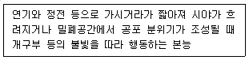
- 귀소본능
- 지광본능
- 추종본능
- 좌회본능
(정답률: 63%)
14. 구획실 화재 시 발생하는 연기의 유해성 및 재연에 관한 설명으로 옳지 않은 것은?
- 화재 시 발생하는 연기 및 독성 가스는 공급되는 공기량에 따라 농도가 변화한다.
- 화재실의 제연은 거주자의 피난경로와 소방대원의 진압경로를 확보하는 것이 주목적이다.
- 화재실의 제연은 화재실의 플래시오버(flashover)성장을 억제하는 효과가 있다.
- 화재 최성기에는 공기를 유입시키는 기계제연이 효과적이다.
(정답률: 49%)
15. 건축물 종합방재계획 중 평면계획 수립 시 유의사항으로 옳지 않은 것은?
- 화재를 작은 범위로 한정하기 위한 유효한 피난구획으로 조닝(Zoning)화 할 필요가 있다.
- 계단은 보행거리를 기준으로 균등 배치하고, 계단으로 통하는 복도 등 피난로는 단순하게 설계하여야 한다.
- 소방활동상 필요한 층과 층을 연결하는 수직 피난로는 피난이 용이한 개방구조로 상호연결 되도록 하여야 한다.
- 지하가와 호텔, 차고 및 극장과 백화점 등은 용도별 구획 및 별도 경로의 피난로를 설치한다.
(정답률: 38%)
16. 내화건축물과 비교한 목조건축물의 화재 특성으로 옳지 않은 것은?
- 화재 최고온도가 낮다.
- 최성기에 도달하는 시간이 빠르다.
- 연소 지속시간이 짧다.
- 플래시오버(flashover)에 도달하는 시간이 빠르다.
(정답률: 59%)
17. 다음 ( )에 들어갈 내용으로 옳은 것은?
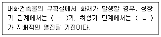
- ㄱ: 대류, ㄴ: 복사
- ㄱ: 대류, ㄴ: 전도
- ㄱ: 복사, ㄴ: 복사
- ㄱ: 전도, ㄴ: 대류
(정답률: 51%)
18. 물체 표면의 절대온도가 100K에서 300K로 증가하는 경우 물체 표면에서 복사되는 에너지는 몇 배 증가하는가? (단, 다른 모든 조건은 동일하다.)
- 3배
- 16배
- 27배
- 81배
(정답률: 37%)
19. 유효연소열이 50kJ/g, 질량연소유속(mass burning flux)이 100g/m2·s인 액체 연료가 누출되어 직경 2m의 풀 전면에 화재가 발생한 경우 열방출속도(HRR)는? (단, π=3.14로 한다.)
- 10,000kW
- 11,500kW
- 13,020kW
- 15,700kW
(정답률: 36%)
20. 프로판가스 연소반응식이 다음과 같을 때 프로판가스 1g이 완전연소하면 발생하는 열량(kcal)은? (단, 소수점 셋째 자리에서 반올림한다.)
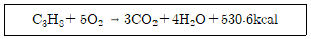
- 1.21
- 10.⑤
- 12.06
- 24.50
(정답률: 41%)
21. 건축물 구획실 화재 시 화재실의 중성대에 관한 설명으로 옳지 않은 것은?
- 중성대는 화재실 내부의 실온이 높아질수록 낮아지고, 실온이 낮아질수록 높아진다.
- 화재실의 중성대 상부 압력은 실외압력보다 높고 하부의 압력은 실외압력보다 낮다.
- 화재실 상부에 큰 개구부가 있다면 중성대는 올라간다.
- 중성대의 위치는 건축물의 높이와 건축물 내·외부의 온도차가 결정의 주요요인이다.
(정답률: 24%)
22. 다음 연소가스의 허용농도(TLV-TWA)를 낮은 것에서 높은 순서로 옳게 나열한 것은?
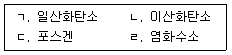
- ㄱ - ㄹ - ㄴ - ㄷ
- ㄷ - ㄱ - ㄹ - ㄴ
- ㄷ - ㄹ - ㄱ - ㄴ
- ㄹ - ㄷ - ㄴ - ㄱ
(정답률: 43%)
23. 화재 시 발생한 부력을 주로 이용하는 제연방식을 모두 고른 것은?
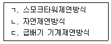
- ㄱ
- ㄱ, ㄴ
- ㄴ, ㄷ
- ㄱ, ㄴ, ㄷ
(정답률: 53%)
24. 고층건축물에서 연돌효과(stack effect)에 관한 설명으로 옳지 않은 것은?
- 건축물 내부의 온도가 외부의 온도보다 높은 경우 연돌효과가 발생한다.
- 건축물 외부 공기의 온도보다 배부의 공기 온도가 높아질수록 연돌효과가 커진다.
- 건축물 내부의 온도와 외부의 온도가 같을 경우 연돌효과가 발생하지 않는다.
- 건축물의 높이가 낮아질수록 연돌효과는 증가한다.
(정답률: 60%)
25. 질량연소유속(mass burning flux)이 20g/m2·s인 연료에 화재가 발생하면서 생성된 일산화탄소의 수율이 0.004g/g인 경우 일산화탄소의 생성속도는? (단, 연소 면적은 2m2이다.)
- 0.04g/s
- 0.08g/s
- 0.16g/s
- 0.22g/s
(정답률: 33%)
2과목: 소방수리학·약제화학 및 소방전
26. 점성계수 및 동점성계수에 관한 설명으로 옳지 않은 것은?
- 액체의 경우 온도상승에 따라 점성계수 값이 감소한다.
- 기체의 경우 온도상승에 따라 점성계수 값이 증가한다.
- 동점성계수는 점성계수를 유속으로 나눈 값이다.
- 점성계수는 유체의 전단응력과 속도경사 사이의 비례상수이다.
(정답률: 28%)
27. 소방장비의 공기 중 무게가 2kg이고 수중에서의 무게가 0.5kg 일 때, 이 장비의 비중은 약 얼마인가?
- 1.33
- 2.45
- 3.25
- 4.00
(정답률: 31%)
28. 수면표고차가 10m인 두 저수지 사이에 설치된 500m 길이의 원형관으로 1.0m3/s의 물을 송수할 때, 관의 지름(mm)은 약 얼마인가? (단, π는 3.14이고, 매닝 조도계수는 0.013이며, 마찰 이외의 손실은 무시한다.)
- 1⑤
- 258
- 484
- 633
(정답률: 17%)
29. 지름 2mm인 유리관에 0.25cm3/s의 물이 흐를 때, 마찰손실계수는 약 얼마인가? (단, π는 3.14이고, 동점성계수는 1.12x10-2cm2/s이다.)
- 0.02
- 0.13
- 0.45
- 0.66
(정답률: 27%)
30. 지름 10㎝인 원형관로를 통하여 0.2m3/s의 물이 수조에 유입된다. 이 경우 단면 급확대로 인한 손실수두(m)는 약 얼마인가? (단, π는 3.14이고, 중력가속도는 981㎝/s2이다.)
- 22.20
- 33.09
- 45.98
- 54.25
(정답률: 30%)
31. 물이 원형관 내에서 층류 상태로 흐르고 있다. 관 지름이 3배로 커질 때 수두손실은 처음의 몇 배로 변화하는가? (단, 관 지름 증가에 따른 유속 변화 이외의 모든 물리량은 변하지 않는다.)
- 1/81
- 1/9
- 9
- 8
(정답률: 37%)
32. 베르누이 방정식을 물이 흐르는 관로에 적용할 때 제한조건으로 옳지 않은 것은?
- 비정상류 흐름
- 비압축성 유체
- 비점성 유체
- 유선을 따르는 흐름
(정답률: 45%)
33. 주요 물리량과 그 차원이 옳게 짝지어진 것은?
- 표면장력: [FL-2]
- 점성계수: [L2T-1]
- 단위중량: [FL-4T2]
- 에너지: [FL]
(정답률: 26%)
34. 원형 유리관 내에 모세관 현상으로 물이 상승할 때, 그 상승 높이에 관한 설명으로 옳은 것은?
- 유리관의 지름에 반비례한다.
- 물의 밀도에 비례한다.
- 중력가속도에 비례한다.
- 물의 표면장력에 반비례한다.
(정답률: 30%)
35. 금속화재에 관한 설명으로 옳지 않은 것은?
- 가연성금속에 의한 화재이다.
- 금속이 괴상이 아닌 고운 분말이나 가는 선의 형태로 존재하면 화재의 위험서은 더 커진다.
- 금속화재를 일으키는 Na, K 등은 물과 만나면 수소가스를 발생시키는 금수성 물질이다.
- 소화 시 강화액 소화약제를 사용한다.
(정답률: 41%)
36. 고발포 포소화약제의 발포배율과 환원시간에 관한 설명으로 옳지 않은 것은?
- 발포배율이 커지면 환원시간은 짧아진다.
- 환원시간이 짧을수록 양호한 포소화약제이다.
- 포의 막이 두꺼울수록 환원시간은 길어진다.
- 발포배율이 작은 포는 포의 직경이 작아서 포의 막은 두껍다.
(정답률: 33%)
37. 이산화탄소소화설비의 화재안전기준상 배관 등에 관한 내용으로 옳은 것은?
- 전역방출방식에 있어서 가연성액체 또는 가연성가스등 표면화제 방호대상물의 경우에는 1분 내에 방사될 수 있는 것으로 하여야 한다.
- 전역방출방식에 있어서 종이, 목재, 석탄, 섬유류, 합성수지류 등 심부화재 방호대상물의 경우에는 10분 내에 방사될 수 있는 것으로 하여야 한다.
- 국소방출 방식의 경우에는 1분 내에 방사될 수 있는 것으로 하여야 한다.
- 전역방출방식에 있어서 심부화재 방호대상물의 경우에는 설계농도가 3분 이내에 40%에 도달하여야 한다.
(정답률: 41%)
38. 불활성기체 소화약제 IG-541에 포함되어 있지 않은 성분은?
- Ar
- CO2
- He
- N2
(정답률: 39%)
39. 강화액 소화약제에 관한 설명으로 옳은 것은?
- 알카리 금속염류 등을 주성분으로 하는 수용액이다.
- 소화약제의 용액은 약산성이다.
- 화염과 접촉 시 열분해에 의하여 질소가 발생하여 질식소화 한다.
- 전기화재 시 무상방사 하는 경우라도 소화약제로 사용할 수 없다.
(정답률: 29%)
40. 이산화탄소 소화약제 600kg을 내용적 68L의 이산화탄소 저장용기에 충전할 때 필요한 저장용기의 최소 개수는? (단, 충전비는 1.6L/kg으로 한다.)
- 9
- 11
- 13
- 15
(정답률: 35%)
41. 공기 중 산소가 21vol%, 질소가 79vol%일 때, 메탄가스 1몰이 완전연소 되었다. 이 때 반응 생성물에서 질소기체가 차지하는 부피비(%)는 약 얼마인가? (단, 생성물은 모두 기체로 가정한다.)
- 44.8
- 56.0
- 71.5
- 75.2
(정답률: 23%)
42. 다음 <가>와 같은 무접점 회로가 있다. 이 회로의 PB1, PB2, PB3에 대한 타임 차트가 <나>와 같을 때, 출력값 R1, R2에 대한 타임차트로 옳은 것은?
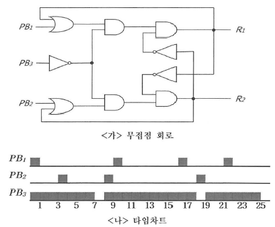
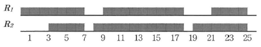
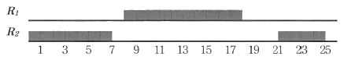
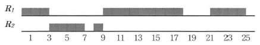
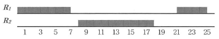
(정답률: 26%)
43. 저항 R과 인덕턴스 L이 직렬로 연결된 R-L 직렬회로에서 교류전압을 인가할 때 회로에 흐르는 전류의 위상으로 옳은 것은?
- 전압보다
 만큼 앞선다.
만큼 앞선다. - 전압보다
 만큼 뒤진다.
만큼 뒤진다. - 전압보다
 만큼 앞선다.
만큼 앞선다. - 전압보다
 만큼 뒤진다.
만큼 뒤진다.
(정답률: 25%)
44. 전원과 부하가 모두 △결선된 3상 평형회로가 있다. 전원 전압 400V, 부하 임피던스 12=j16Ω인 경우 선전류(A)는?
- 10
- 10√3
- 20
- 20√3
(정답률: 35%)
45. 다음과 같은 비정현파, 전류에 관한 평균전력(W)은?
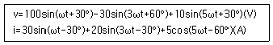
- 750
- 775
- 1225
- 1825
(정답률: 19%)
46. 전기력선의 성질에 관한 설명으로 옳지 않은 것은?
- 전기력선의 밀도는 전계의 세기와 같다.
- 두 개의 전기력선은 교차하지 않는다.
- 전기력선의 방향은 전계의 방향과 일치하지 않는다.
- 전기력선은 등전위면과 직교한다.
(정답률: 30%)
47. 이종 금속을 접합하여 폐회로를 만든 후 두 접합 점의 온도를 다르게 하여 열전류를 얻는 열전현상으로 옳은 것은?
- 펠티에 효과(Peltier effect)
- 제벡 효과(Seebeck effect)
- 톰슨 효과(Thomson effect)
- 핀치 효과(Pinch effect)
(정답률: 38%)
48. 상호인덕턴스가 150mH인 회로가 있다. 1차 코일에 흐르는 전류가 0.5초 동안 5A에서 20A로 변화할 때, 2차 유도기전력(V)은?
- 3
- 4.5
- 6
- 7.5
(정답률: 32%)
49. 전동기 기동에 관한 설명으로 옳지 않은 것은?
- 농형 유도전동기의 Y-△기동 시 기동전류는 △결선하여 기동한 경우의 1/3이 된다.
- 권선형 유도전동기 기동 시 기동전류를 제한하기 위하여 기동보상기법이 주로 사용된다.
- 분상 기동형 단상 유도전동기는 병렬로 연결되어 있는 주권선과 보조권선에 의해 회전자계를 만들어 기동한다.
- 콘덴서 기동형 단상 유도전동기는 기동권선에 직렬로 콘덴서를 연결하여 주권선과 기동권선 사이에 위상차를 만들어 기동한다.
(정답률: 24%)
50. 전력용반도체 소자에 관한 설명으로 옳지 않은 것은?
- SCR(Silicon Controlled Rectifier)은 소호기능이 없으며, 전류는 양극(A)와 음극(K) 전압의 극성이 바뀌면 차단된다.
- TRLA(Triode AC Switch)은 SCR 2개를 역방향으로 병렬연결한 형태로 양방향제어가 가능하다.
- GOT(Gate Turn Off Thyristor)는 도통시점과 소호시점을 임의로 제어할 수 있는 양방향성 소자이다.
- IGBT(Insulated Gate Bipolar Transistor)는 고속스위칭이 가능하며 대전류 출력특성이 있다.
(정답률: 29%)
3과목: 소방관련법령
51. 소방기본법령상 소방업무의 응원에 관한 설명으로 옳은 것은?
- 소방청장은 소방활동을 할 때에 필요한 경우에는 시·도지사에게 소방업무의 응원을 요청해야 한다.
- 소방업무의 응원을 위하여 파견된 소방대원은 응원을 요청한 소방본부장 또는 소방서장의 지휘에 따라야 한다.
- 소방업무의 응원 요청을 받은 소방서장은 정당한 사유가 있어도 그 요청을 거절할 수 없다.
- 소방서장은 소방업무의 응원을 요청하는 경우를 대비하여 출동 대상지역 및 규모와 필요한 경비의 부담 등에 관하여 필요한 사항을 대통령령으로 정하는 바에 따라 이웃하는 소방서장과 협으이하여 미리 규약으로 정하여야 한다.
(정답률: 41%)
52. 소방기본법령상 소방용수시설 중 저수조의 설치기준으로 옳지 않은 것은?
- 소방펌프자동차가 쉽게 접근할 수 있도록 할 것
- 흡수에 지장이 없도록 토사 및 쓰레기 등을 제거할 수 있는 설비를 갖출 것
- 흡수부분의 수심이 0.5미터 이상일 것
- 지면으로부터의 낙차가 5.5미터 이하일 것
(정답률: 43%)
53. 소방기본법령상 특수가연물에 해당하지 않는 것은?
- 볏짚류 500킬로그램
- 면화류 200킬로그램
- 사류(絲類) 1,000킬로그램
- 넝마 및 종이부스러기 1,000킬로그램
(정답률: 33%)
54. 소방기본법령상 벌칙 기준에 관한 설명으로 옳지 않은 것은?
- 화재조사를 수행하면서 알게 된 비밀을 다른 사람에게 누설한 화재조사 관계 공무원은 500만원 이항의 벌금에 처한다.
- 위력을 사용하여 출동한 소방대의 화재진압·인명구조 또는 구급활동을 방해하는 행위를 한 사람은 5년 이하의 징역 도는 5천만원 이하의 벌금에 처한다.
- 화재경계지구 안의 소방대상물에 대한 소방특별조사를 거부·방해 또는 기피한 자는 100만원 이하의 벌금에 처한다.
- 피난 명령을 위반한 사람은 100만원 이하의 벌금에 처한다.
(정답률: 33%)
55. 소방시설공사업법령상 소방기술자의 자격취소 또는 소방시설업의 등록취소에 관한 설명으로 옳지 않은 것은?
- 소방시설업자가 거짓이나 그 밖의 부정한 방법으로 등록한 경우 시 · 도지사는 그 등록을 취소해야 한다.
- 소방기술 인정 자격수첩을 발급받은 자가 그 자격수첩을 다른 사람에게 빌려준 경우 소방청장은 그 자격을 취소해야 한다.
- 소방시설업자가 다른 자에게 등록수첩을 빌려준 경우 소방청장은 그 등록을 취소해야 한다.
- 소방시설업자가 등록 결격사유에 해당하게 된 경우 시 · 도지사는 그 등록을 취소해야 한다.
(정답률: 31%)
56. 소방시설공사업법령상 소방기술자의 배치기준이다. ( )에 들어갈 내용으로 옳게 나열한 것은?
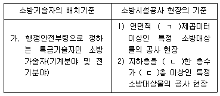
- ㄱ: 10만, ㄴ: 포함, ㄷ: 20
- ㄱ: 10만, ㄴ: 제외, ㄷ: 30
- ㄱ: 20만, ㄴ: 포함, ㄷ: 40
- ㄱ: 20만, ㄴ: 제외, ㄷ: 50
(정답률: 38%)
57. 소방시설공사업법령상 하도급계약심사위원회의 구성으로 옳은 것은?
- 위원장 1명과 부위원장 1명을 제외하여 21명 이내의 위원으로 구성한다.
- 위원장 1명과 부위원장 2명을 포함하여 5~9명 이내의 위원으로 구성한다.
- 위원장 1명과 부위원장 1명을 제외하여 9명 이내의 위원으로 구성한다.
- 위원장 1명과 부위원장 1명을 포함하여 10명 이내의 위원으로 구성한다.
(정답률: 36%)
58. 화재예방, 소빙시설 설치·유지 및 안전관리에 관한 법령상 작동기능점검의 기록표(ㄱ)와 종합정밀점검의 기록표(ㄴ)의 메인컬러를 옳게 나열한 것은?
- ㄱ: 노랑 PANTONE 116C, ㄴ: 빨강 PANTONE 032C
- ㄱ: 빨강 PANTONE 032C, ㄴ: 노랑 PANTONE 116C
- ㄱ: 연두 PANTONE 376C, ㄴ: 파랑 PANTONE 279C
- ㄱ: 파랑 PANTONE 279C, ㄴ: 연두 PANTONE 376C
(정답률: 36%)
59. 화재예방, 소방시설 설치 · 유지 및 안전관리에 관한 법령상 화재안전정책기본계획(이하 “기본계획”이라 함) 등의 수립 및 시행에 관한 설명으로 옳지 않은 것은?
- 국가는 화재안전 기반 확충을 위하여 화재안전정책에 관한 기본계획을 5년마다 수립·시행하여야 한다.
- 기본계획은 대통령령으로 정하는 바에 따라 소방청장이 관계 중앙행정기관의 장과 협의하여 수립한다.
- 기본계획에는 화재안전분야 국제경쟁력 향상에 관한 사항이 포함되어야 한다.
- 소방청장은 기본계획을 시행하기 위하여 2년마다 시행계획을 수립 · 시행하여야 한다.
(정답률: 40%)
60. 화재예방, 소방시설 설치 · 유지 및 안전관리에 관한 법령상 화재안전기준 또는 대통령령이 변경되어 그 기준이 강화되는 경우 기존의 특정소방대상물의 소방시설에 대하여 강화된 기준을 적용하는 소방시설로 옳지 않은 것은?
- 소화기구
- 노유자시설에 설치하는 비상콘센트설비
- 의료시설에 설치하는 자동화재탐지설비
- 「국토의 계획 및 이용에 관한 법률」에 따른 공동구에 설치하여야 하는 소방시설
(정답률: 31%)
61. 화재예방, 소방시설 설치·유지 및 안전관리에 관한 법령상 소방안전관리대상물의 관계인이 피난시설의 위치, 피난경로 또는 대피요령이 포함된 피난유도 안내정보를 근무자 또는 거주자에게 정기적으로 제공하는 방법으로 옳지 않은 것은?
- 연 2회 피난안내 교육을 실시하는 방법
- 연 1회 피난안내방송을 실시하는 방법
- 피난안내도를 층마다 보기 쉬운 위치에 게시하는 방법
- 엘리베이터, 출입구 등 시청이 용이한 지역에 피난안내영상을 제공하는 방법
(정답률: 30%)
62. 화재예방, 소방시설 설치 · 유지 및 안전관리에 관한 법령상 소방안전관리대상물의 소방계획서에 포함되어야 하는 사항이 아닌 것은?
- 국가화재안전정책의 여건 변화에 관한 사항
- 소방시설·피난시설 및 방화시설의 점검·정비계획
- 화재 예방을 위한 자체점검계획 및 진압대책
- 화기 취급 작업에 대한 사전 안전조치 및 감독 등 공사 중 소방안전관리에 관한 사항
(정답률: 36%)
63. 화재예방, 소방시설 설치·유지 및 안전관리에 관한 법령상 옥외소화전설비에 관한 내용이다. ( )에 들어갈 내용으로 옳게 나열한 것은?
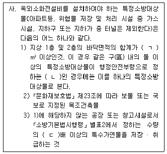
- ㄱ: 6천, ㄴ: 연소 우려가 개구부, ㄷ: 650
- ㄱ: 7천, ㄴ: 연소 우려가 구조, ㄷ: 650
- ㄱ: 8천, ㄴ: 연소 우려가 개구부, ㄷ: 750
- ㄱ: 9천, ㄴ: 연소 우려가 구조, ㄷ: 750
(정답률: 40%)
64. 화재예방, 소방시설 설치·유지 및 안전관리에 관한 법령상 소방안전 특별관리기본 계획 및 시행계획 및 시행계획의 수립·시행에 관한 설명으로 옳지 않은 것은?
- 소방청장은 소방안전 특별관리기본계획을 5년마다 수립·시행하여야 한다.
- 소방청장은 소방안전 특별관리기본계획을 계획 시행 전년도 12월 31일까지 수립하여 행정안전부에 통보한다.
- 시 · 도지사는 소방안전 특별관리기본계획을 시행하기 위하여 매년 소방안전 특별관리 시행계획을 계획 시행 전년도 12월 31일까지 수립하여야 한다.
- 시 · 도지사는 소방안전 특별관리기본계획을 시행 결과를 계획 시행 다음 연도 1월 31일까지 소방청장에게 통보하여야 한다.
(정답률: 27%)
65. 화재예방, 소방시설 설치 · 유지 및 안전관리에 관한 법령상 방염성능기준 이상의 실내장식물 등을 설치하여야 하는 특정소방대상물에 해당하지 않는 것은? (단, 11층 미만인 특정소방대상물임)
- 교육연구시설 중 합숙소
- 건축물의 옥내에 있는 수영장
- 근린생활시설 중 종교집회장
- 방송통신시설 중 촬영소
(정답률: 48%)
66. 화재예방, 소방시설 설치 · 유지 및 안전관리에 관한 법령상 건축물의 신축 · 증축 및 개축 등으로 송방용품을 변경 또는 신규 비치하여야 하는 경우 우수품질인증 소방용품을 우선 구매 · 사용하도록 노력하여야 하는 기관 및 단체를 모두 고른 것은?
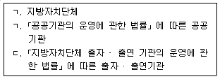
- ㄱ, ㄴ
- ㄱ, ㄷ
- ㄴ, ㄷ
- ㄱ, ㄴ, ㄷ
(정답률: 36%)
67. 화재예방, 소방시설 설치 · 유지 및 안전관리에 관한 법령상 특급 소방안전관리대상물의 소방안전관리에 관한 강습교육 과정별 교육시간은 운영 편성기준 중 특급 소방안전관리자에 관한 강습교육시간으로 옳은 것은?
- 이론: 16시간, 실무: 64시간
- 이론: 24시간, 실무: 56시간
- 이론: 32시간, 실무: 48시간
- 이론: 40시간, 실무: 40시간
(정답률: 31%)
68. 위험물안전관리법령상 지정수량 이상의 위험물을 저장하기 위한 저장소의 구분에 포함되지 않는 것은?
- 옥내저장소
- 옥외저장소
- 지하저장소
- 이동탱크저장소
(정답률: 39%)
69. 위험물안전관리법령상 제조소등에 대한 정기점검 및 정기검사에 관한 설명으로 옳지 않은 것은?
- 이동탱크저장소는 정기점검의 대상이다.
- 액체위험물을 저장 또는 취급하는 50만리터 이상의 옥외탱크저장소는 정기검사의 대상이다.
- 소방본부장 또는 소방서장은 당해 제조소등에 대하여 연 1회 이상 정기점검을 실시하여야 한다.
- 정기점점의 내용 · 방법 등에 관한 기술상의 기준과 그 밖의 점검에 관하여 필요한 사항은 소방청장이 정하여 고시한다.
(정답률: 23%)
70. 위험물안전관리법령상 탱크안전성능검사에 해당하지 않는 것은?
- 기초 · 지반검사
- 충수 · 수압검사
- 밀폐 · 재질검사
- 암반탱크검사
(정답률: 32%)
71. 위험물안전관리법령상 위험물의 안전관리와 관련된 업무를 수행하는 자가 받아야하는 안전교육에 관한 설명으로 옳은 것은?
- 안전교육대상자는 시 · 도지사가 실시하는 교육을 받아야 한다.
- 모든 제조소등의 관계인은 안전교육대상자이다.
- 시 · 도지사는 안전교육을 강습교육과 실무교육으로 구분하여 실시한다.
- 시 ·도지사, 소방본부장 또는 소방서장은 안전교육대상자가 교육을 받지 아니한 때에는 그 교육대상자가 교육을 받을 때까지 위험물안전관리법의 규정에 따라 그 자격으로 행하는 행위를 제한할 수 있다.
(정답률: 30%)
72. 다중이용업소의 안전관리에 관한 특별법령상 ‘밀폐구조의 영업장’에 대한 용어의 정의이다. ( )에 들어갈 내용으로 옳게 나열한 것은?
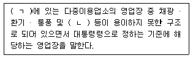
- ㄱ: 지하층, ㄴ: 피난
- ㄱ: 지하층, ㄴ: 소화활동
- ㄱ: 지상층, ㄴ: 피난
- ㄱ: 지상층, ㄴ: 소화활동
(정답률: 24%)
73. 다중이용업소의 안전관리에 관한 특별법령상 다른 법률에 따라 다중이용업의 허가·인가·등록·신고수리를 하는 행정기관이 허가등을 한 날부터 14일 이내에 관할 소방본부장 또는 소방서장에게 통보하여야 하는 사항을 모두 고른 것은?
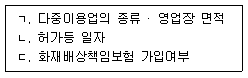
- ㄱ, ㄴ
- ㄱ, ㄷ
- ㄴ, ㄷ
- ㄱ, ㄴ, ㄷ
(정답률: 24%)
74. 다중이용업소의 안전관리에 관한 특별법령상 이행강제금의 부과권자가 아닌 것은?
- 소방청장
- 소방본부장
- 소방서장
- 시·군·구청장
(정답률: 34%)
75. 다중이용업소의 안전관리에 관한 특별법령상 안전시설등의 구분(소방시설, 비상구, 영업장 내부피난통로, 그 밖의 안전시설)중 ‘그 밖의 안전시설’에 해당하지 않는 것은?
- 휴대용비상조명등
- 영상음향차단장치
- 누전차단기
- 창문
(정답률: 35%)
4과목: 위험물의 성상 및 시설기준
76. 위험물안전관리법령상 제1류 위험물에 해당하는 것은?
- 과요요드산
- 질산구아니딘
- 염소화규소화합물
- 할로겐간화합물
(정답률: 34%)
77. 위험물에 관한 설명으로 옳지 않은 것은?
- 중크롬산암모늄은 융점 이상으로 가열하면 분해되어 Cr2O3가 생성된다.
- 적린은 독성이 강한 자연발화성물질로 황린의 동소체이다.
- 수소화나트퓸이 물과 반응하면 수산화나트륨이 생성된다.
- 니트로셀룰로오스는 물이나 알코올에 습윤하면 운반 시 위험성이 낮아진다.
(정답률: 25%)
78. 인화알루미늄이 물과 반응할 때 생성되는 가스는?
- P2O5
- C2H6
- PH3
- H3PO4
(정답률: 29%)
79. 위험물의 지정수량과 위험등급에 관한 내용이다. ( )에 들어갈 내용으로 옳은 것은?
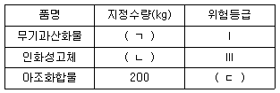
- ㄱ: 50 ㄴ: 1,000 ㄷ:Ⅰ
- ㄱ: 50 ㄴ: 1,000 ㄷ:Ⅱ
- ㄱ: 100 ㄴ: 500 ㄷ:Ⅱ
- ㄱ: 100 ㄴ: 500 ㄷ:Ⅲ
(정답률: 41%)
80. 위험물안전관리법령상 위험물의 성질에 따른 제조소의 특례 중 취급하는 설비에 철이온 등의 혼입에 의한 위험한 반응을 방지하기 위한 조치를 강구해야 하는 물질은?
- 산화프로필렌
- 히드록실아민
- 메틸리튬
- 히드라진
(정답률: 37%)
81. 위험물안전관리법령상 위험물을 운반용기에 수납하는 기준이다. ( )에 들어갈 내용으로 옳은 것은?
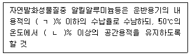
- ㄱ: 80, ㄴ: 10
- ㄱ: 85, ㄴ: 10
- ㄱ: 90, ㄴ: 5
- ㄱ: 95, ㄴ: 5
(정답률: 32%)
82. 위험물안전관리법령상 위험물을 운반하기 위하여 적재하는 경우, 차광성이 있는 피복으로 가리지 않아도 되는 것은?
- 염소산나트륨
- 아세트알데히드
- 황린
- 마그네슘
(정답률: 24%)
83. 위험물의 분류 및 표지에 관한 기준상 GHS의 물리적 위험성과 그림문자의 연결로 옳지 않은 것은?
- 자연발화성 액체:

- 둔감화된 폭발성물질:

- 금속부식성 물질:

- 산화성 액체:

(정답률: 25%)
84. 칼륨 39g이 물과 완전 반응하였을 때 이론적으로 발생할 수 있는 수소의 질량(g)은 약 얼마인가? (단, 칼륨 1몰의 원자량은 39g/mol이다.)
- 1
- 2
- 3
- 4
(정답률: 28%)
85. 다음 제4류 위험물을 인화점이 높은 것부터 낮은 순서대로 옳게 나열한 것은?
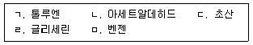
- ㄱ - ㄷ - ㄴ - ㄹ - ㅁ
- ㄴ - ㅁ - ㄱ - ㄷ - ㄹ
- ㄹ - ㄷ - ㄱ - ㅁ - ㄴ
- ㄹ - ㄷ - ㅁ - ㄱ - ㄴ
(정답률: 25%)
86. 메틸알코올 32g을 공기 중에서 완전연소 시키기 위하여 필요한 공기량(g)은 약 얼마인가? (단, 공기 중에 산소는 20vol.%, 질소는 80 vol.%이다.)
- 54
- 108
- 216
- 432
(정답률: 20%)
87. 제3류 위험물인 시안화수소에 관한 설명으로 옳지 않은 것은?
- 특이한 냄새가 난다.
- 맹독성 물질이다.
- 염료, 농약, 의약 등에 사용된다.
- 증기비중이 1보다 크다.
(정답률: 33%)
88. 27℃, 0.5atm(50,662Pa)에서 과산화수소 1몰은 약 몇 g인가?
- 8.5
- 17.0
- 34.0
- 68.0
(정답률: 18%)
89. 위험물안전관리법령상 옥내저장소의 위치 · 구조 및 설비의 기준에 따라 위험물 저장창고의 바닥을 물이 스며 나오거나 스며들지 아니하는 구조로 하여야 하는 위험물이 아닌 것은?
- 과산화나트륨
- 철분
- 칼륨
- 니트로글리세린
(정답률: 31%)
90. 위험물안전관리법령상 주우취급소에 캐노피를 설치하는 경우 주유취급소의 위치 · 구조 및 설비의 기준에 해당하지 않는 것은?
- 배관이 캐노피 내부를 통과할 경우에는 1개 이상의 점검구를 설치할 것
- 캐노피의 면적은 주유를 취급하는 곳의 바닥면적의 1/3 이하로 할 것
- 캐노피 외부의 점검이 곤란한 장소에 배관을 설치하는 경우에는 용접이음으로 할 것
- 캐노피 외부의 배관이 일광열의 영향을 받을 우려가 있는 경우에는 단열재로 피복할 것
(정답률: 31%)
91. 위험물안전관리법령상 옥외저장소에 지정수량 이상을 저장할 수 있는 위험물을 모두 고른 것은? (단, 옥외에 있는 탱크에 위험물을 저장하는 장소는 제외한다.)
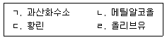
- ㄱ, ㄷ
- ㄴ, ㄹ
- ㄱ, ㄴ, ㄹ
- ㄱ, ㄷ, ㄹ
(정답률: 26%)
92. 제5류 위험물의 성질에 관한 설명으로 옳지 않은 것은?
- 강산화제, 강산류와 혼합한 것은 발화를 촉진시키고 위험성도 증가한다.
- 디아조화합물은 위험등급Ⅰ로 고농도인 경우 충격에 민감하여 연소 시 순간적으로 폭발한다.
- 니트로화합물은 화기, 가열, 충격 등에 민감하여 폭발위험이 있다.
- 외부의 산소공급이 없어도 자기연소하므로 연소속도가 빠르다.
(정답률: 34%)
93. 물과 반응하여 수소가스가 발생하는 것은?
- 돌루엔
- 적린
- 루비듐
- 트리니트로페놀
(정답률: 28%)
94. 위험물안전관리법령상 제조소에 설치하는 배출설비에 관한 설명으로 옳지 않은 것은?
- 배출능력은 1시간당 배출장소 용적의 10배 이상인 것으로 하여야 한다. 다만, 전역방식의 경우에는 바닥면적 1m2당 18m3 이상으로 할 수 있다.
- 위험물취급설비가 배관이음 등으로만 된 경우에는 전역방식으로 할 수 있다.
- 배출구는 지상 2m 이상으로서 연소의 우려가 없는 장소에 설치하여야 한다.
- 배풍기 · 배출 덕트(duct) · 후드 드을 이용하여 강제적으로 배출하는 것으로 해야 한다.
(정답률: 23%)
95. 위험물안전관리법령상 소화설비, 경보설비 및 피난설비의 기준에서 제조소들에 전기설비가 설치된 경우 당해 장소의 면적이 400m2일 때, 소형수동식소화기를 최소 몇 개 이상 설치해야 하는가? (단, 전기배선, 조명기구 등은 제외한다.)
- 1
- 2
- 3
- 4
(정답률: 32%)
96. 위험물안전관리법령상 제조소의 안전거리 기준에 관한 설명으로 옳지 않은 것은? (단, 제6류 위험물을 취급하는 제조소를 제외한다.)
- 「초 · 중등교육법」제2조 및「고등교육법」제2조에 정하는 학교는 수용인원에 관계없이 30m 이상 이역하여야 한다.
- 「아동복지법」에 따른 아동복지시설에 20명 이상의 인원을 수용하는 경우는 30m 이상 이격하여야 한다.
- 「공연법」에 의한 공연장이 300명 이상의 인원을 수용하는 경우는 30m이상 이격하여야 한다.
- 「노인복지법」에 의한 노인복지시설에 20명 이상의 인원을 수용하는 경우는 20m이상 이격하여야 한다.
(정답률: 27%)
97. 위험물안전관리법령상 제조소의 환기설비 시설기준에 관한 설명으로 옳지 않은 것은?
- 바닥면적이 120m2인 경우, 급기구의 면적은 300cm2 이상으로 하여야 한다.
- 환기구는 지붕위 또는 지상 2m 이상의 높이에 회전식 고정벤티레이터 또는 루푸팬방식으로 설치할 것
- 급기구는 해당 급기구가 설치된 실의 바닥면적 150m2 마다 1개 이상으로 하여야 한다.
- 급기구는 낮은 곳에 설치하고 가는 눈의 구리망 등으로 인화방지망을 설치하여야 한다.
(정답률: 34%)
98. 위험물안전관리법령상 제1종 판매취급소의 위치·구조 및 설비의 기준으로 옳지 않은 것은?
- 판매취급소는 건축물의 1층에 설치할 것
- 판매취급소의 용도로 사용하는 부분의 창 및 출입구에는 갑종방화문 또는 을종방화문을 설치할 것
- 판매취급소로 사용되는 부분과 다른 부분과의 격벽은 내화구조로 할 것
- 판매취급소의 용도로 사용하는 건축물의 부분은 보를 불연재료로 하고, 천장을 설치하는 경우에는 천장을 나연재료로 할 것
(정답률: 31%)
99. 위험물안전관리법령상 위험물제조소에서 위험물을 가압하는 설비 또는 그 취급하는 위험물의 압력이 상승할 우려가 있는 설비에 설치하는 안전장치가 아닌 것은?
- 대기밸브부착 통기관
- 자동적으로 압력의 상승을 정지시키는 장치
- 안전밸브를 병용하는 경보장치
- 감압측에 안전밸브를 부착한 감압밸브
(정답률: 28%)
100. 위험물안전관리법령상 제1류 위험물을 저장하는 옥내저장소의 저장창고는 지면에서 처마까지의 높이를 몇 m 미만인 단층건물로 하는가?
- 6
- 8
- 10
- 12
(정답률: 36%)
5과목: 소방시설의 구조원리
101. 제연설비의 화재안전기준상 제연설비에 관란 기준으로 옳은 것은?
- 하나의 제연구역의 면적은 1,500m2이내로 할 것
- 하나의 제연구역의 직경 100m 원내에 들어갈 수 있을 것
- 하나의 제연구역은 2개 이상 층에 미치지 아니하도록 할 것. 다만, 층의 구분이 불분명한 부분은 그 부분을 다른 부분과 별도로 제연구획 하여야 한다.
- 통로상의 제연구역은 수평거리가 100m를 초과하지 아니할 것
(정답률: 45%)
102. 분말소화설비의 화재안전기준상 가압용가스용기에 관한 가준으로 옳지 않은 것은?
- 분말소화약제의 가스용기는 분말소화약제의 저장용기에 접속하여 설치하여야 한다.
- 가압용가스에 질소가스를 사용하는 것의 질소가스는 소화약제 1kg마다 10ℓ이상으로 할 것
- 분말소화약제의 가압용가스 용기를 3병 이상 설치한 경우에는 2개 이상의 용기에 전자개방밸브를 부착하여야 하낟.
- 가압용가스에 이산화탄소를 사용하는 것의 이산화탄소는 소화약제 1kg에 대하여 20g에 배관의 청소에 필요한 양을 가산한 양 이상으로 할 것
(정답률: 35%)
103. 할로겐화합물 및 불활성기체소화설비의 화재안전기준에서 정하고 있는 할로겐화합물 및 불활성기체소화약제 최대허용설계농도 중 다음에서 최대허용설계농도(%)가 가장 낮은 소화약제는?
- IG-55
- HFC-23
- HFC-125
- FK-5-1-12
(정답률: 32%)
104. 지하구의 화재안전기준상 방화벽의 설치기준으로 옳지 않은 것은?
- 내화구조로서 홀로 설 수 있는 구조일 것
- 방화벽의 출입문은 을종방화문으로 설치할 것
- 방화벽은 분기구 및 국사·변전소 등의 건축물과 지하구가 연결되는 부위(건축물로부터 20m 이내)에 설치할 것
- 방화벽을 관통하는 케이블·전선 등에는 국토교통부 고시(내화구조의 인정 및 관리기준)에 따라 내화충전 구조로 마감할 것
(정답률: 47%)
1⑤. 연결송수관설비의 화재안전가준상 배관에 관한 설치기준의일부이다. ( )에 들어갈 것으로 옳은 것은?
- ㄱ: 100, ㄴ: 9
- ㄱ: 100, ㄴ: 11
- ㄱ: 150, ㄴ: 9
- ㄱ: 150, ㄴ: 11
(정답률: 41%)
106. 연결살수설비의 화재안전기준상 송수구의 설치높이로 옳은 것은?
- 지면으로부터 높이가 0.5m 이상 1m 이하의 위치에 설치할 것
- 지면으로부터 높이가 0.8m 이상 1.5m 이하의 위치에 설치할 것
- 지면으로부터 높이가 1m 이상 1.5m 이하의 위치에 설치할 것
- 지면으로부터 높이가 1.5m 이상 2m 이하의 위치에 설치할 것
(정답률: 39%)
107. 무선통신보조설비의 화재안전기준상 누설동축케이블 설치기준으로 옳지 않은 것은?
- 누설동축케이블과 이에 접속하는 안테나 또는 동축케이블과 이에 접속하는 안테나로 구성할 것
- 누설동축케이블의 끝부분에는 무반사 종단저항을 견고하게 설치할 것
- 해당 전로에 정전기 차폐장치를 유효하게 설치한 경우에도 누설동축케이블 및 안테나는 고압의 전로로부터 1m 이상 떨어진 위치에 설치할 것
- 누설동축케이블 및 동축케이블은 특성이 변질되지 아니하는 것으로 장애가 없도록 할 것
(정답률: 35%)
108. 미분무소화설비의 화재안전기준에 관한 내용으로 옳지 않은 것은?
- 중압미분무소화설비란 사용압력이 0.5 MPa을 초과하고 5.5MPa 이하인 미분무소화설비를 말한다.
- 사용되는 필터 또는 스트레이너의 메쉬는 헤드 오리피스 지름의 80% 이하가 되어야한다.
- 설비에 사용되는 구성요소는 STS 304 이상의 재료를 사용하여야 한다.
- 가압송수장치가 기동되는 경우에는 자동으로 정지되지 아니하도록 하여야 한다.
(정답률: 26%)
109. 포소화설비의 화재안전기준에서 정하고 있는 가압송수장치의 포워터스프링클러헤드 표준방사량으로 옳은 것은?
- 50 L/min 이상
- 65 L/min 이상
- 70 L/min 이상
- 75 L/min 이상
(정답률: 29%)
110. 소화기구 및 자동소화장치의 화재안전기준상 다음 조건에 따른 의료시설에 설치해야하는 소형소화가의 최소 설치개수는?
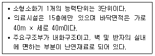
- 4개
- 6개
- 9개
- 11 개
(정답률: 33%)
111. 옥내소화전설비에서 옥내소화전 2개설치 시 최소유량은 260L/min 이다. 펌프성능시혐에서 다음 ( )에 들어갈 것으로 옳은 것은?
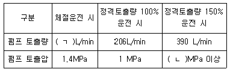
- ㄱ : 0, L : 0.65
- ㄱ : 0, L : 1.5
- ㄱ : 130, L : 0.65
- ㄱ : 130, L : 1.5
(정답률: 37%)
112. 옥외소화전 5개가 설치된 특정소방대상물이 있다. 펌프방식을 사용하여 소화수를 공급할 때， 펌프의 전동기 최소용량 (kW)은 약 얼마인가?
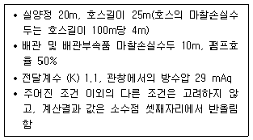
- 1.51
- 12.43
- 15.10
- 20.51
(정답률: 26%)
113. 스프링클러설비의 화재안전기준상 헤드에 관한 기준으로 옳은 것은?
- 살수가 방해되지 아니하도록 벽과 스프링클러헤드간의 공간은 10cm 이상으로 한다.
- 스프링클러헤드와 그 부착면과의 거리는 60cm 이하로 한다.
- 상부에 설치된 헤드의 방출수에 따라 감열부에 영향을 받을 우려가 있는 헤드에는 방출수를 차단할 수 있는 유효한 반사판을 설치한다.
- 측벽형을 설치하는 경우 긴 변의 한쪽 벽에 일렬로 설치하고 4m 이내마다 설치한다.
(정답률: 29%)
114. 옥내소화전설비의 화재안전기준에 관한 내용으로 옳은 것은?
- 물올림장치란 옥내소화전설비의 관창에서 압력변동을 검지하여 자동적으로 펌프를 기동시키는 것으로서 압력챔버 또는 기동용압력 위치 등을 말한다.
- 펌프의 토출 측에는 진공계를 체크밸브 이전에 펌프토출 측 플랜지에서 가까운 곳에 설치한다.
- 가압송수장치의 기동을 표시하는 표시등은 옥내소화전함의 내부에 설치하되 황색등으로 한다.
- 옥내소화전설비의 수원은 그 저수량이 옥내소화전의 설치개수가 가장 많은 층의 설치개수(2개 이상 설치된 경우에는 2개)에 2.6m3를 곱한 양 이상이 되도록 하여야 한다.
(정답률: 36%)
115. 건축물의 높이가 3.5m인 특수가연물을 저장 또는 취급하는 랙크식 창고에 스프링클러설비를 설치하고자 한다. 바닥면적 가로 40m x 세로 66m라고 한다면, 스프링클러헤드를 정방형으로 배치할 경우 헤드의 최소 설치개수는?
- 322개
- 433개
- 476개
- 512개
(정답률: 25%)
116. 옥내소화전설비의 화재안전기준상 가압송수장치의 내연기관에 관한 내용으로 옳지 않은 것은?
- 내연기관의 기동은 소화전함의 위치에서 원격조작이 가능하고 기동을 명시하는 적색등을 설치할 것
- 제어반에 따라 내연기관의 자동기동 및 수동기동이 가능하고, 상시 충전되어 있는 축전지설비를 갖출 것
- 내연기관의 연료량은 펌프를 20분(층수가 30층 이상 49층 이하는 40분, 50층 이상은 60분) 이상 운전할 수 있는 용량일 것
- 내연기관의 충압펌프는 정격부하운전 시험 및 수온의 상승을 방지하기 위하여 순환배관을 설치할 것
(정답률: 34%)
117. 다음 조건에서 준비작동식 유수검지장치를 설치할 경우 광전식 스포트형 2종 연기감지기의 최소 설치개수는?
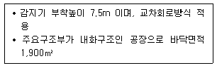
- 26개
- 28개
- 52개
- 56개
(정답률: 31%)
118. 피난기구의 화재안전기준의 설치장소별 피난기구 적응성에서 노유자시설의 층별 적응성이 있는 피난기구의 연결이 옳은 것은?
- 지하 1층 - 피난교
- 지상 2층 - 완강기
- 지상 3층 - 승강식 피난기
- 지상 4층 - 미끄럼대
(정답률: 31%)
119. 화재예방, 소방시설 설치 · 유지 및 안전관리에 관한 법령상 시각경보기를 설치하여야 하는 특정소방대상물이 아닌 것은?
- 숙박시설로서 연면적이 700m2 인 특정소방대상물
- 문화 및 집회시설로서 연면적이 900m2 인 특정소방대상물
- 노유자시설로서 연면적이 800m2 인 특정소방대상물
- 업무시설로서 연면적이 1,200m2 인 특정소방대상물
(정답률: 27%)
120. 소방시설의 내진설계 기준에 관한 내용으로 옳지 않은 것은?
- 상쇄배관(offset)이란 영향구역 내의 직선배관이 방향전환 한 후 다시 같은 방향으로 연속될 경우, 중간에 방향전환 된 짧은 배관은 단부로 보지 않고 상쇄하여 직선으로 볼 수 있는 것을 말하며, 짧은 배관의 합산길이는 3.7m 이하여야 한다.
- 하나의 수평직선배관은 최소 2개의 횡방향 흔들림 방지 버팀대와 1개의 종방향 흔들림 방지 버팀대를 설치하여야 한다.
- 수평직선배관 횡방향 흔들림 방지 버팀대의 간격은 중심선을 기준으로 최대간격이 12m를 초과하지 않아야 한다.
- 수평직선배관 종방향 흔들림 방지 버팀대의 설계하중은 영향구역내의 수평주행배관, 교차배관, 가지배관의 하중을 포함하여 산정한다.
(정답률: 19%)
121. 자동화재탐지설비 및 시각경보장치의 화재안전기준상 감지기에 관한 내용으로 옳은것은?
- 공기관식 차동식분포형감지기 공기관의 노출부분은 감지구역마다 10m 이상이 되도록 한다.
- 감지기는 실내로의 공기유입구로부터 0.6m 이상 떨어진 위치에 설치한다.
- 광전식분리형감지기의 광축은 나란한 벽으로부터 0.5m 이상 이격하여 설치한다.
- 파이프덕트 등 그 밖의 이와 비슷한 것으로서 2개층마다 방화구획된 것이나 수평단면적이 5m2 이하인 것은 감지기를 설치하지 아니한다.
(정답률: 27%)
122. 지하구의 화재안전기준상 자동화재탐지설비에 관한 설치기준의 일부이다. ( )에 들어갈 것으로 옳은 것은?
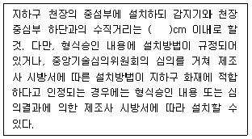
- 30
- 45
- 60
- 80
(정답률: 33%)
123. 유도등 및 유도표지의 화재안전기준상 다음 조건에 따른 객석유도등의 최소 설치개수는?
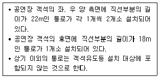
- 9개
- 11개
- 14개
- 17개
(정답률: 32%)
124. 자동화재탐지설비 및 시각경보장치의 화재안전기준상 경계구역의 설정기준으로 옳지 않은 것은?
- 하나의 경계구역의 면적은 600m2 이하로 하고 한변의 길이는 50m 이하로 할 것
- 외기에 면하여 상시 개방된 부분이 있는 차고 · 주차장 · 창고 등에 있어서는 외기에 면하는 각 부분으로부터 5m 미만의 범위안에 있는 부분은 경계구역의 면적에 산입하지 아니한다.
- 하나의 경계구역이 2개 이상의 건축물에 미치지 아니하도록 할 것
- 하나의 경계구역이 2개 이상의 층에 미치지 아니하도록 할 것. 다만, 600m2 이하의 범위 안에서는 2개의 층을 하나의 경계구역으로 할 수 있다.
(정답률: 36%)
125. 비상방송설비의 화재안전기준상 음향장치의 설치기준으로 옳은 것은?
- 증폭기 및 조작부는 수위실 등 상시 사람이 근무하는 장소로서 점검이 편리하고 방화상 유효한 곳에 설치할 것
- 기동장치에 따른 화재신고를 수신한 후 필료한 음량으로 화재발생 상황 및 피난에 유효한 방송이 자동으로 개시될 때까지의 소요시간은 30초 이하로 할 것
- 층수가 3층 이상으로서 연면적이 2,000m2를 초과하는 특정소방대상물 지상 1층에서 발화한 때에는 발화층 · 그 직상층 및 지하층에 경보를 발할 것
- 확성기의 음성입력은 1W(실외에 설치하는 것에 있어서는 2W) 이상일 것
(정답률: 29%)
MITE는 반응물 분자들이 반응에 참여하기 위해 필요한 최소 에너지를 의미한다. 따라서 온도가 상승하면 분자들의 운동 에너지가 증가하여 MITE가 작아지고, 압력이 상승하면 분자들 간의 충돌이 더 많아져 MITE가 작아진다. 또한 연소속도가 빠를수록 반응물 분자들이 충돌하는 빈도가 높아져 MITE가 작아진다.